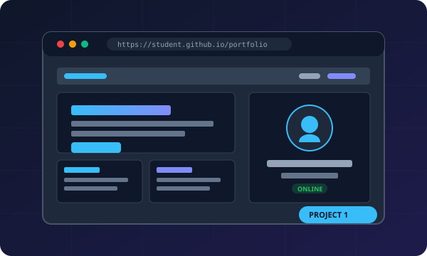

Required • Project 1

Personal Portfolio Website
HTML5
CSS3 (Tokens & Grid)
Vanilla JS ES6+
GitHub Pages
Web Audio API
A high-performance, modular, and fully responsive personal portfolio designed to satisfy all course specifications for SITE 1101. Features custom CSS design tokens for fluid dark/light theming, zero-dependency sound effects, an interactive gamified skill tree matrix (+10% bonus feature), and strict mobile responsiveness without bloated libraries.